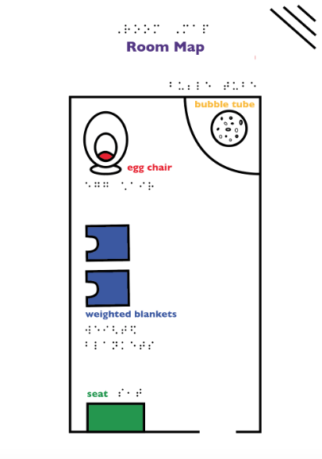
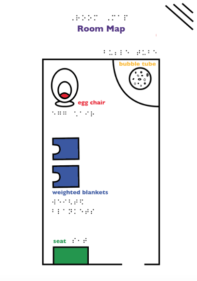

Everyday Assistive Technology
Prompt: Design for the future. Think a product that could be sold in the future and what are it's consequences in its hypothetical world.
Smar+Pet is a company focused on extending the emotional support that animals can provide to people that don't have the time to take care of an actual pet. Smar+Pets are electronic pets that keep track of their owner's daily routine, making sure that they are mentally healthy and meeting their daily goals.
Skills Used
- Illustrator
- InDesign
- Photoshop
- Lightroom
- Laser Cutting
 
